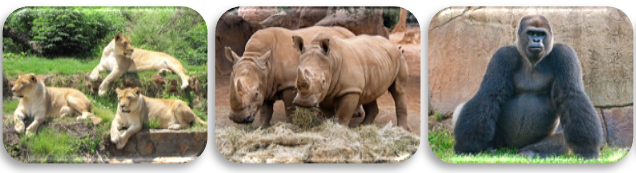

Experience an amazing adventure!
The City Zoo accommodates more than 2 000 animals from 380 species in its timeless and beautiful zoological garden.
Sign up for annual membership and you will enjoy the following benefits:
Membership to the zoo is NOT transferable. A membership card shows the name of the person who is eligible to enjoy all the membership benefits offered.
Present your current membership card and ID document for admission.
If you allow unauthorised persons to use your membership card, you will forfeit your membership.
If you lose your card, a replacement card will cost R30.00.
Annual membership does not cover special tours or holiday programmes.